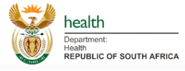

Department of Correctional Services
Short description about the Department of Correctional Services.
Department of Education
Short description about the Department of Education.

Department of Social Development
Department of Community Safety

Department of Health
South African Police Services (SAPS)
Ekurhuleni Metropolitan Police Department (EMPD)